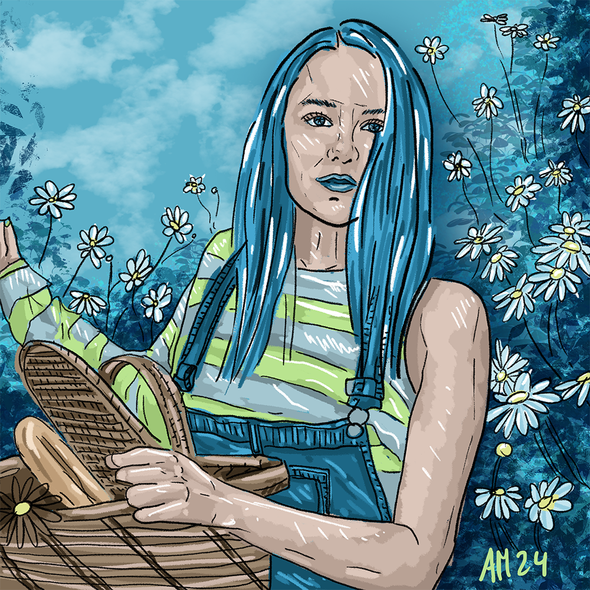

Frau mit Korb
Diese Zeichnung ist im Rahmen einer Zeichen-Challenge, Facetober 2024, in meiner Schwangerschaft entstanden. Voegegeben waren in den 30 Challenge-Tagen jeweils drei Begriffe. Für dieses Bild war die Grundlage: daisies, longhair, picnic.